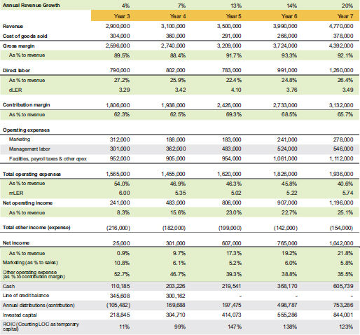

Table 8.4
ATSi years 4 through 7

The highlights of year 4 are as follows:
- Using a dLER of $3.50 to control hiring and raises, ATSi was finally able to hit 10% net income and a leveraged ROIC of 99%, but they still needed to pay off their line of credit.
- The biggest change in operating expenses was their marketing spend, which fell by $124,000. As a result, their revenue increased at a higher rate than in year 3, which had a greater marketing spend. Marketing expenses should be effective, but the challenge is tracking and measuring that effectiveness. ATSi tended to keep customers for multiple years, and they had overapplied the lifetime value of a customer concept to justify some of their marketing spend. The lifetime value of a customer can be a valid concept if you have a lot of cash to burn until you scale, but ATSi did not. When funding is limited, you first have to get profitable with what you have, then decide if you want to gamble with your after-tax profits and use the launch capital ideas described in Chapter 6.
- The owner finally took a full market-based wage in year 4 and did not have to take distributions from that point forward to fund personal living expenses.
- The distributions in year 4 were used to pay off the personal funding sources the owner contributed during years 2 and 3. Since those were not long-term structured sources, they had a higher repayment priority than the business debt, which did get reduced some.
- No taxes were paid on the business profits, since ATSi was still carrying forward losses from prior years, but every dollar of profit would be taxed from this point forward.
Things really started taking off in year 5. ATSi started to feel and see the benefits of their plan. Here are the highlights:
- With a dLER of no less that $3.50, you are still looking for the upper end of what is possible. As you identify your brand standard and your team executes to that standard, you do not add labor until you have to. In year 5, ATSi set a new standard for what is possible, but sometimes their direct labor was functioning beyond capacity, or as we say, “running hot.” They knew they would need to add labor in the following year, but they could be patient and find the right new team members. ATSi found that a dLER of $3.50 gave them a steady state of operations and room to train new staff. If needed, they could temporarily run as high as $4.00, but that would not be sustainable for more than one year.
- The mLER settled in at $5.00 or above. This is usually the last metric to solidify, but it should remain constant or slightly improve from here. Until the shareholders are taking a full market wage, you cannot target the mLER rate. While dLER varies considerably from business to business, mLER seems to run from $3.50 to $4.00 for 10% profit performance, and it moves to $5.00 once you get above $5 million in revenue for the majority of businesses we see. ATSi was able to use an mLER of $5.00 as their salary cap for the management team from this point forward.
- Facilities, payroll taxes, and other operating expenses had not changed drastically from year 1. The costs from year 1 were really for the year 5 revenue support. These costs should scale relative to contribution margin from this point forward, with a slight lag in timing. They usually adjust one year after the next size level is attained.
- The company’s marketing effectiveness really improved, and they started to get a better feel of how to spend for impact. By keeping the spend level the same as year 4, they were able to achieve 13% growth over that year and were poised to increase the spend, now that they had a better idea of what worked for the money invested.
- The company profits soared, so they paid off their line of credit and had a company celebration! Distributions were made only to cover taxes on profit that flowed through to the owner. They retained the rest of the cash to build their core capital target of two months of operating expenses in cash. For ATSi, that is $250,000 for one month and $500,000 for two months, so they ended the year almost at one month.
- ROIC soared to 147% with no leverage, but the company was still undercapitalized by one month of operating expenses. The investment was finally starting to pay off!
ATSi’s success continued in year 6, and their profit climbed to 19%. The key highlights from year 6 are as follows:
- Since their dLER ran above $4.00 in year 5, they took the pressure off by adding more employees, then the dLER dropped back to $3.76. From here, the company needed to balance raises for their team against the cost of adding new personnel.
- Operating expenses stayed in line with their operating ratios, and the additional marketing spend was a success in that it was proportional to the company’s growth.
- Of the $765,000 in profit, about $500,000 was used for distributions. That included $270,000 to cover taxes and $230,000 for an after-tax distribution to the owner. The company did not see any investment opportunities that would meet the minimum 50% ROIC standard, so they built wealth outside the business. It feels good when you get a profit distribution as a tangible reward for your strategy. The remaining profit was used to increase cash, get to 1.5 months of core capital, increase accounts receivable, and purchase some minor fixed assets.
- ROIC came in at 138%, which is not too shabby!
Year 7 was the company’s best year ever, in terms of net income dollars and net income as a percentage to revenue. While the net results were outstanding, ATSi must stay mindful of certain trends to remain stable. Here are the highlights:
- The dLER has fallen back to $3.49 because the company had to staff up quickly for a 20% growth year. They expect dLER to fall back to $3.75 as the new team members get acclimated and fully trained. You can see that the dLER drop cost them 3% on contribution margin as a percentage to revenue. Also, part of the change was caused by increased wages for their existing team members so ATSi could stay competitive in a very tough labor market. The company will probably need to increase their prices soon to get dLER back to $3.75 because efficiency alone cannot overcome rising wages.
- The mLER continues to rise, but ATSi will likely need to add more members to the management team as they cross the $5 million threshold and exit the black hole. They will be able to add that labor and stay above their $5.00 mLER target.
- The company’s marketing effectiveness continues to shine. Their spend was held at about 6% to sales, and they added 20% in new revenue. It is imperative to track marketing effectiveness this way so you can give effective feedback to the person in charge of spending.
- Operating expenses continue to lag revenue growth, but those expenses typically take a year to respond. Their percentage to revenue dropped significantly this year because the company had a big growth year, so they expect some of those costs to rise in the following year.
- The profit was used for distributions of $753,286, which includes $364,700 for taxes and $388,586 to the owner as a profit distribution. They also increased their cash by $237,569 to meet their two-month core capital target.
- ROIC stayed high, at 123%, and the company is fully capitalized. Where can you get that kind of yield in the market?
Is Marketing to Blame?
For as much as every entrepreneur wants an algorithm to tell them how much to spend on marketing, our experience across many industries shows that it is more art than science. The most effective method is to test, evaluate, and expand until the market resists.
If your results are not as expected, marketing may not be the issue; it could be that your product, service, or customer service approach is not what the market wants.
The ATSi case study exemplifies the kinds of transformations that we often get to experience with our clients. I am amazed at how often entrepreneurs make effective decisions when they have timely and understandable business data.
Key Data Points for Labor Productivity
There are only a handful of major data points you need to focus on when your data is structured so you can read it clearly. Here are a few more key takeaways from working with our clients on their labor productivity.
LER Is Your Four-Minute Mile Barrier
Back in the 1950s it was widely believed that no human could ever run a mile faster than four minutes. Then Roger Bannister did it in 1954 with the help of two runners who helped pace him. LER in business is like a world record; it exists to be beaten, and it serves as a pacing mechanism. When our clients monitor LER by quarter, month, week, or day, they have a greater chance to achieve their desired target. Once they reach a new level, it reminds them what is possible and points to the next mile marker.
Focus on Labor Dollars, Not Bodies
Whenever I hear an entrepreneur discuss revenue, profit, or any other measure per person, it makes me cringe. The last time I checked, no two people are the same, so a per-person metric to quantify output seems dehumanizing. I know it is not meant that way; it is just that people do not see the actual dollars they need to create a better measurement since most companies bury payroll information in their financial reports.
Equitability, Not Equality
This might not be a popular thing to say, but assuming the playing field is level in the first place, pay equitability is more important than equal pay. With an equal pay concept, the business or the employee is avoiding measurement to compare the levels of output by person. Equitability means paying more to those who consistently produce more. The nice thing about equitable pay is that it motivates the business owner to keep paying people more as they produce more, and the company often provides on-the-job training to help employees achieve their best. It is the ultimate win/win scenario for employers and employees. In a highly competitive wage market, savvy businesses use this approach, rather than paying employees as little as they can, to keep the competition from stealing them away.
One of my favorite behavioral economics researchers and authors is Adam Grant, who is a Wharton School professor and the bestselling author of Give and Take. He discussed the topic on his blog in a post about athlete pay on professional sports teams. He wrote, “Teams with unequal pay won fewer games when pay differences were not connected to performance. But they won more games when differences in pay were based on players’ contributions. Equity matters more than equality. Differences in pay aren’t a problem, as long as they’re fair. When players are paid less than teammates who aren’t performing any better, jealousy, resentful [sic], and discouragement often follow. When they’re paid less than teammates who deliver more value, they understand” (“Should Teammates Get Equal Pay?” July 18, 2014, retrieved from https://www.ethicalsystems.org/aggregator/sources/6?page=2).